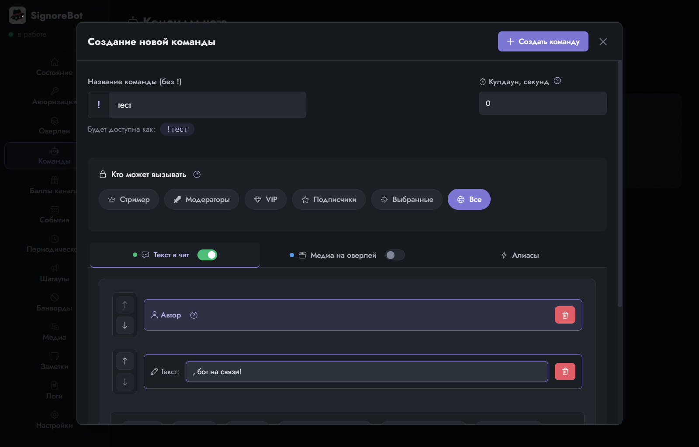
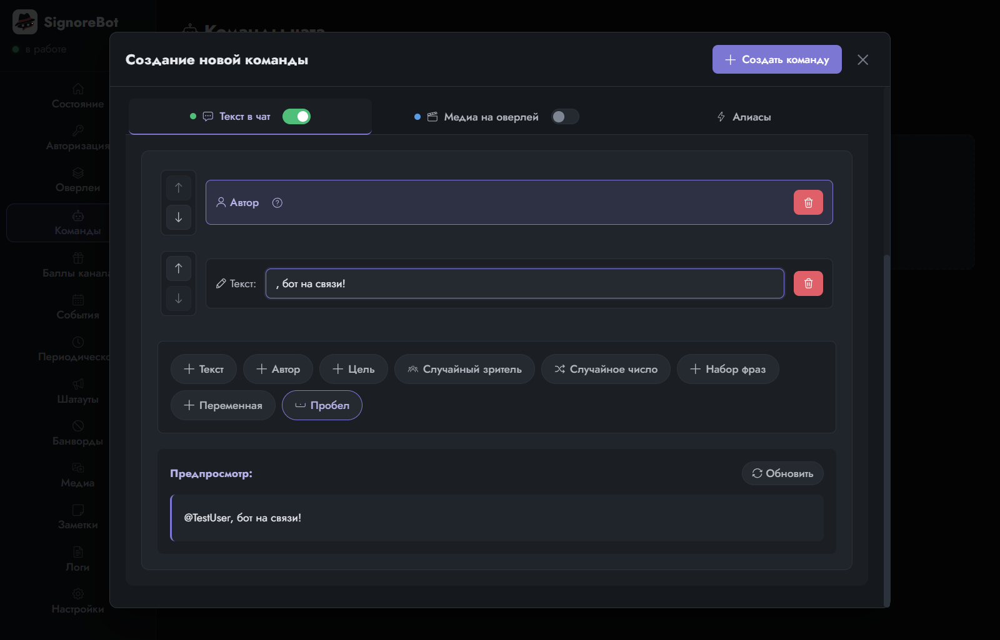
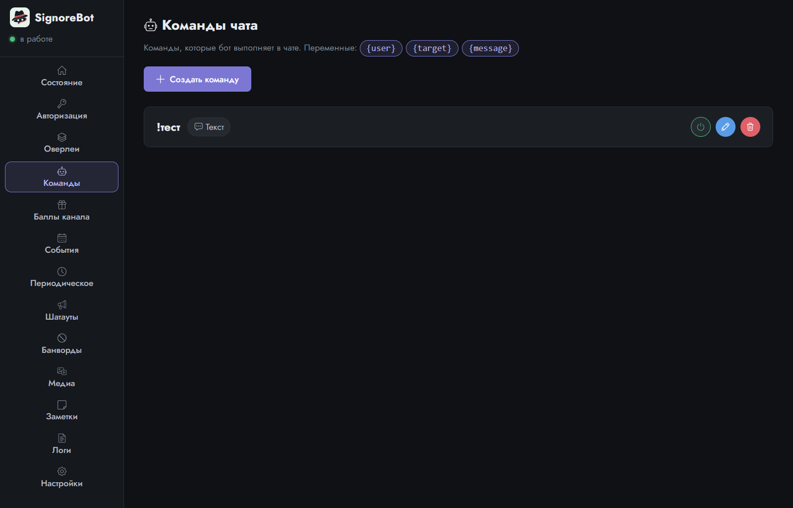
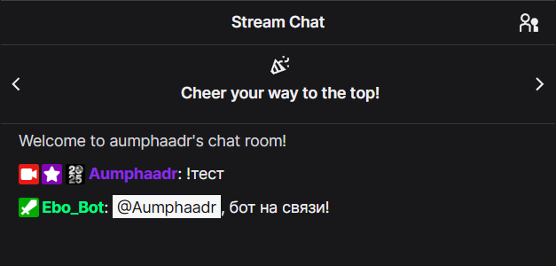

Урок 3 из 9
Первая команда и слово «реакция»
Самое простое, что умеет любой чат-бот: зритель пишет !тест, бот отвечает. Сделаем такую команду за минуту и заодно разберёмся с главным словом SignoreBot.
Что такое реакция
Бот ничего не делает сам по себе. Всё, что он умеет, — это отвечать на поводы: кто-то написал команду, кто-то потратил баллы канала, кто-то зафолловил, прошло десять минут. Ответ на повод в SignoreBot называется реакция. У любой реакции ровно две возможные части: текст в чат и медиа на оверлей (картинка, звук или видео поверх стрима). Можно включить одну, другую или обе.
Это слово встретится дальше на каждой странице. Команда, награда, событие и таймер — разные поводы, а реакция у них устроена одинаково: тот же редактор, те же две вкладки. Так что команда, сделанная сейчас, заодно объясняет и всё остальное.
Создаём команду
Откройте вкладку Команды и нажмите Создать команду. Название пишется без восклицательного знака: тест. Сам знак ! — это префикс, метка «это команда, а не просто слово в чате»; бот добавит его сам и покажет рядом, как команда будет выглядеть.

Теперь сама реакция. На вкладке Текст в чат включите тумблер и соберите сообщение из блоков: нажмите Автор, затем Текст и впишите продолжение фразы: , бот на связи! Запятая в начале не опечатка, блоки склеиваются без пробелов между ними. Блок «Автор» подставит имя того, кто написал команду, и ответ получится личным. Предпросмотр внизу сразу показывает, как это прочитает зритель.

Нажмите Создать команду. Карточка команды появится в списке; капсулы на ней рассказывают, что она делает, а при наведении объясняют подробнее.

Проверяем в чате
Напишите !тест в чате своего канала — с любого аккаунта, хоть с основного. Бот ответит от имени аккаунта-бота. Стрим для этого запускать не нужно: чат канала работает и офлайн.

Что ещё есть у команды
Прямо сейчас это не нужно, но пригодится потом:
- Кто может вызывать — все, только стример, модераторы, VIP, подписчики или конкретные ники. Удобно для служебных команд.
- Кулдаун — пауза между срабатываниями в секундах, чтобы командой не спамили.
- Алиасы — дополнительные имена той же команды:
!testлатиницей,!тпокороче.
Пока команда умеет только писать в чат. Вторая половина реакции лежит в той же карточке, на соседней вкладке Медиа на оверлей: она включается таким же тумблером, но сначала боту нужно место на экране, куда эти картинки и звуки отправлять.